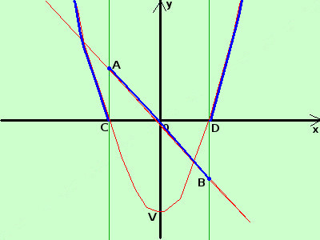

|
sviluppo tracciare il grafico della seguente funzione
La prima parte della funzione e' un segmento di retta che devo tracciare nella striscia verticale di piano compresa fra le rette verticali x>=-2 ed x=2; tale segmento inizia dal punto A(-2;2) e termina nel punto B(2;-2) La seconda parte della funzione e' una funzione simmetrica rispetto all'asse delle y; e' una parabola con vertice nel punto V(0;-4) e taglia l'asse delle x nei punti C(-2;0) e D(2;0)  devo tracciarla nelle due regioni di piano, la prima nella striscia compresa fra -∞ e la retta verticale x=-2 la seconda nella striscia compresa fra la retta verticale x=2 e +∞ Nei punti di giunzione la funzione salta da un valore di y ad un altro; detto diversamente la funzione non e' "connessa" cioe' non posso spostarmi da un qualunque suo punto a qualunque altro tramite un cammino su punti della funzione stessa Si dice che tale funzione non e' "continua" e i punti dove salta sono detti punti di discontinuita' A scuola si preferisce un'altra definizione intuitiva: una funzione e' continua se posso tracciarla senza staccare la penna dal foglio; se ci pensi bene e' la stessa definizione Naturalmente la definizione "ufficiale" di funzione continua e' un'altra cosa Disegno la retta e la parabola (in rosso) considero le curve disegnate nelle loro striscie di piano in blu il risultato finale |